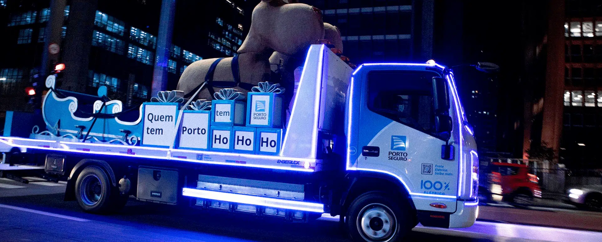

Atualmente, a empresa tem um problema de esforço operacional humano muito grande no processo de atendimento para escolher um modal da categoria de veículos pesados.
Em média, cerca de 2000 atendimentos sendo que 60% necessitam de atuação humana para escolha do melhor modal, e mesmo com essa atuação, a empresa tem cerca de 10% a 15% de retrabalhos gerados por necessidade de apoio ao atendimento.
Então o prestador recebe uma ordem de serviço com informações não acertivas para o atendimento, se dislocam até o local requerido e apenas na chegada que identificam o melhor tipo de modal.
